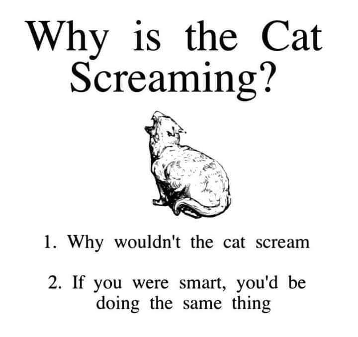
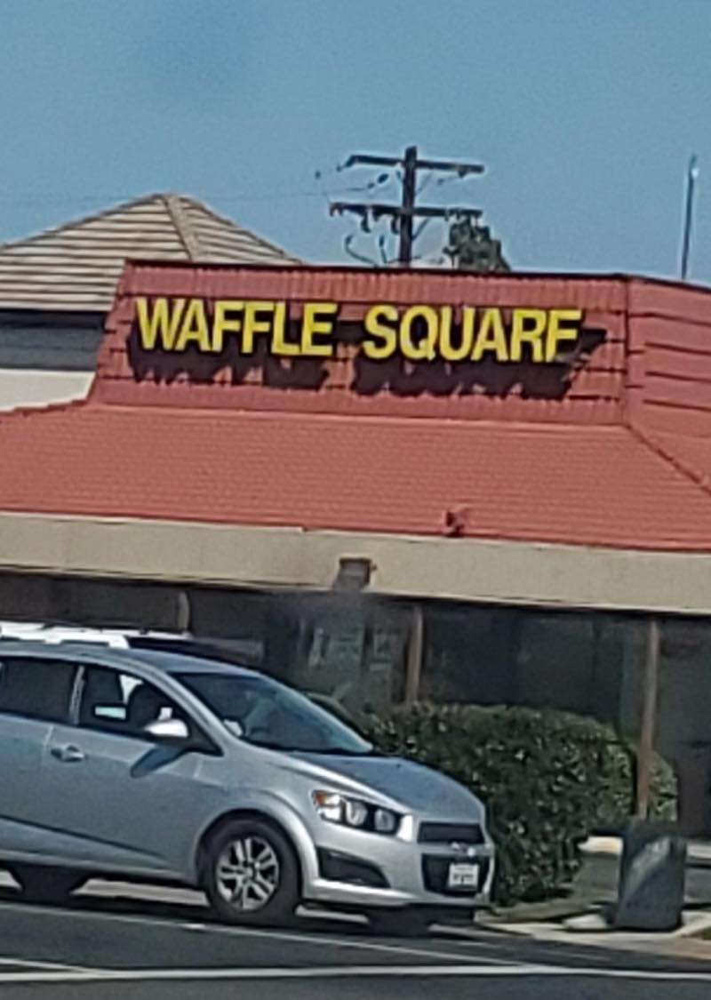
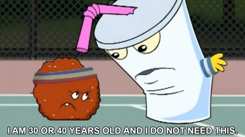
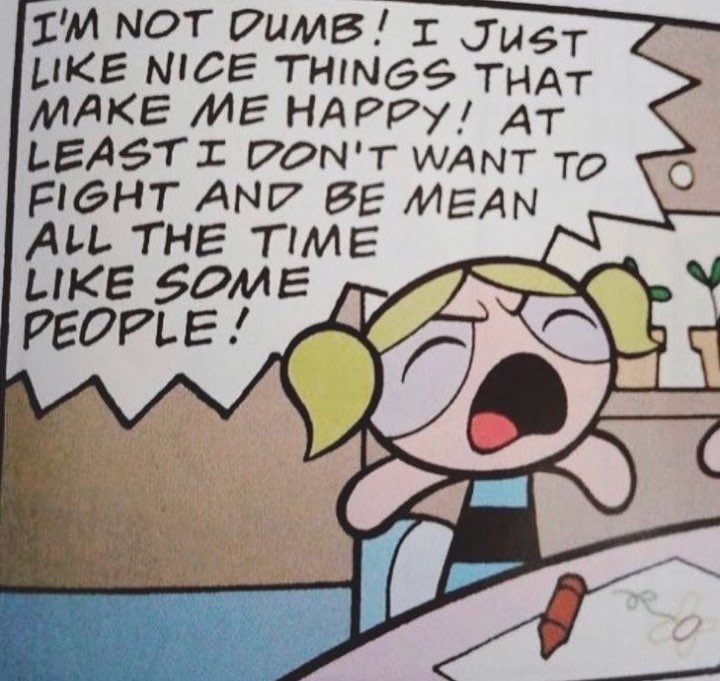
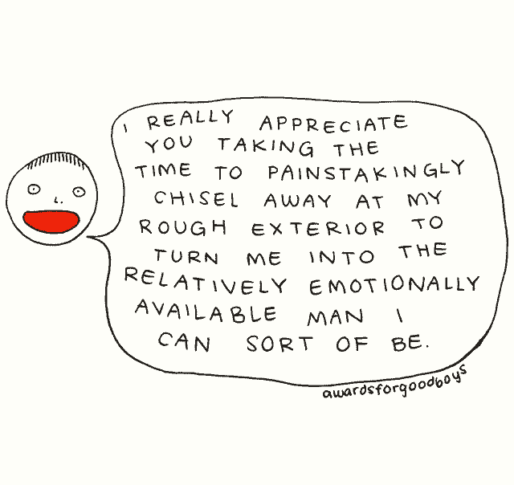

 

moodboard
 
![two tumblr posts. i'm starting with the bottom one, which is a claymation penguin angrily slapping a heart onto a piece of paper surrounded by red glitter. the top one, to which it is a response, is long. it reads as follows: fucking hate it when the stuff everybody says 'actually works' does actually work. hate exercising and realizing i've let go of a lot of anxiety and anger because i've overturned my fight-or-flight response. hate eating right and eating enough and eating 3 times a day and realizing i'm less anxious and i have more energy hate journaling in my stupid notebook with my stupid bic ballpoint and realizing that i've actually started healing about something once i'm able to externalize it hate forgiving myself hate complimenting myself more often hate treating myself with kindness hate taking a gratitude inventory hate having patience hate talking to myself gently hate turning my little face up to the sun and taking deep breaths and looking at nature and grounding myself and realizing that i feel less burdened and more hopeful, more actually-here, that i am able to see the good sides of myself more clearly, that i am able to see not only how far i have to grow - but also how much growth i have already done & how much of my life i truly fill with light and laughter and love horrible horrible horrible. hate it but i'm gonna do it tho](./hate_it_but_im_gonna_do_it.jpeg)